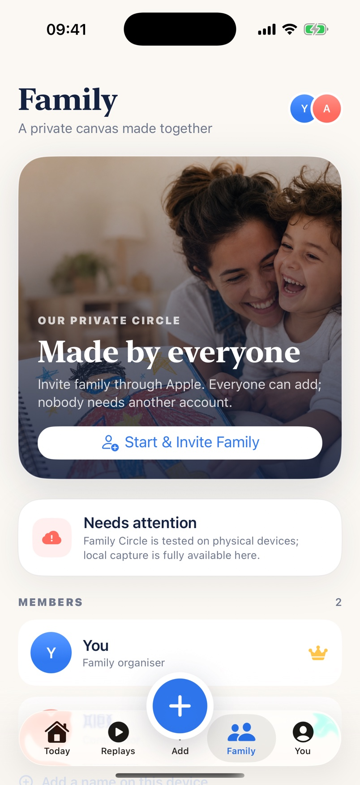
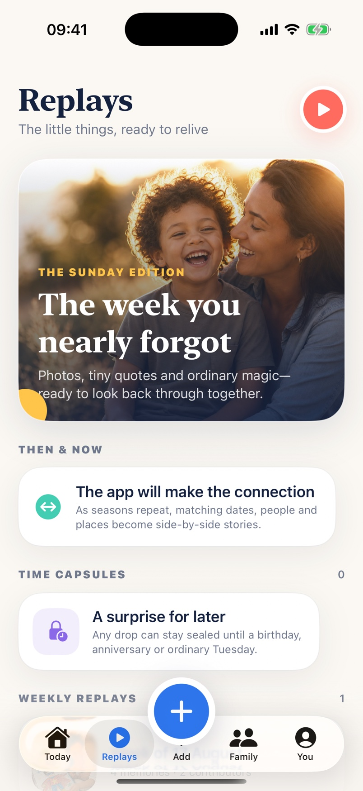
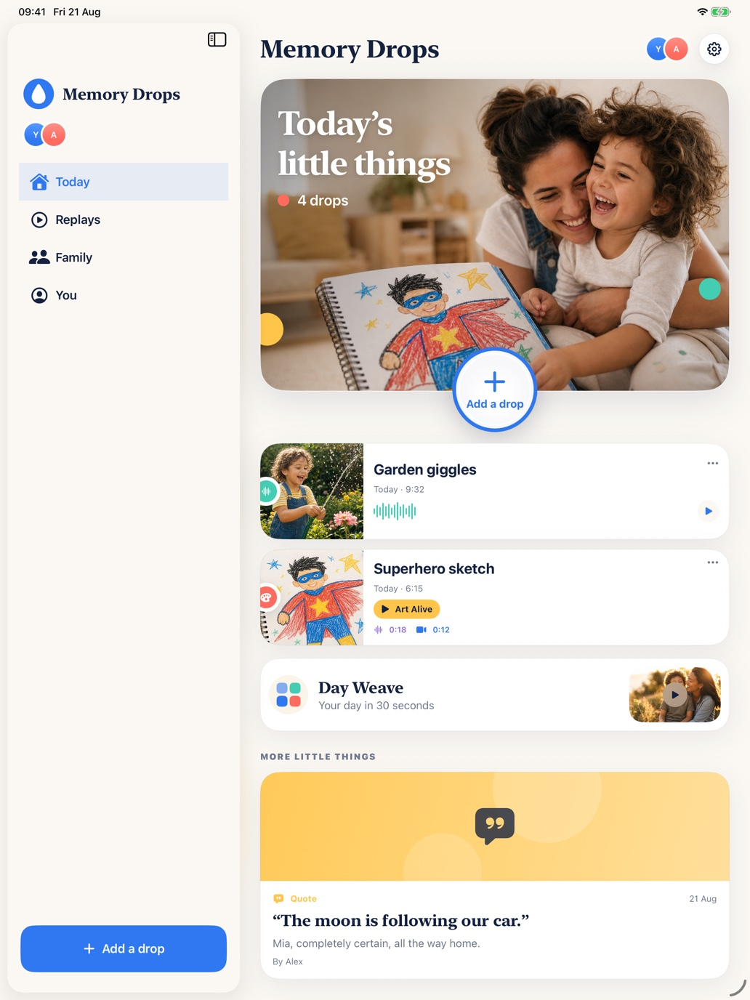

Memory Drops
Save photos, short videos, voice notes, quotes and multi-page artwork with dates, people and the words behind them.
Catch the laugh, the sentence, the scribble and the ordinary Tuesday before they disappear. Memory Drops gives the whole family one beautiful, private place to keep them.


Warm photography, generous typography, bright Memory Drop colours and a capture button that is always close. These are current screens from the tested iPhone build—not concept art.


Apple’s document camera finds the edges and straightens every page. On-device Vision isolates the subject and creates a short living artwork loop—without sending the scan away. Add the artist’s voice or video explanation—or both—and they stay attached to the original.
A funny quote can matter as much as a perfect photograph. Family Memories gives every kind of small moment the right shape, then makes it easy to find and relive.
Save photos, short videos, voice notes, quotes and multi-page artwork with dates, people and the words behind them.
Choose one suggestion in Apple’s private picker. Photos, places, steps, a route and selected activity become an editable day log on your device.
Invite family through Apple’s iCloud sharing. Everyone can contribute to the same private canvas without creating another account.
Weekly Sunday Editions, Then & Now connections and time capsules make the collection worth returning to.
Every saved drop remembers how it entered the app: camera, photo picker, scanner, recorder, typed note, Apple suggestion or Family Circle.
Keep a readable catalogue of titles, stories and dates, and use Apple’s sharing controls only when you decide something should leave the app.

The iPad experience uses a native sidebar, a wider editorial layout and the same capture, replay and privacy tools. It is not a stretched website or an oversized iPhone screen.
Memory Drops stay in the app’s private storage unless you explicitly start Family Circle. The app has no advertising, cross-app tracking, third-party analytics or developer account.
Family Memories is currently in a small, invite-only TestFlight with the existing family test group. There is no public App Store or public TestFlight link yet.